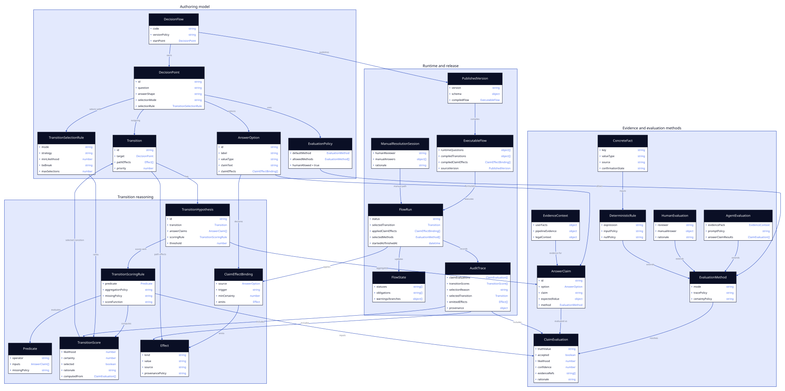

class DecisionFlowThe aggregate root for a policy-like decision model.
- Owns the start point and all decision points.
- Defines the legal and factual scope of the flow.
- Is versioned before it can be executed.
- Corresponds mainly to
ComplianceFlow.
A domain-level view of decision flows as policies that ask evidence-backed questions, distinguish agent judgment, human resolution, and deterministic calculation, evaluate alternative-level hypotheses, emit effects, and preserve an audit trace.
A decision flow is a versioned decision specification. It describes what must be asked, what evidence can answer it, which rules choose the next step, and which compliance conclusions are accumulated during a run. The implementation has authoring classes and runtime payloads, but logically the flow is one decision model moving through different representations. The recommended disambiguation is to make evaluation method a property of each decision point, so agent judgment, human resolution, and deterministic calculation remain separate answer-production strategies inside the same flow. Trusted or confirmed facts are input-source policies for deterministic rules, not a separate evaluation method. Every decision point should also allow explicit human resolution, so a lawyer or other accountable reviewer can manually resolve a flow without changing the flow semantics. Resolution itself is claim-based: each answer option formulates an answer claim, those claims are evaluated first, and each outgoing transition is represented as a transition hypothesis that aggregates the relevant claims. The next decision is selected by calculating which transition hypothesis is true enough, or, for an exclusive decision, which one is most likely to be true. Effects can be attached either to answer options whose derived claims are accepted or to selected transitions, so a classification like provider can emit its own status or obligation even when several options share the same route.

class DecisionFlowThe aggregate root for a policy-like decision model.
ComplianceFlow.class DecisionPointA question-shaped branching point in the reasoning process.
FlowNode and runtime Question.class EvaluationMethodThe declared method for evaluating answer claims at a decision point.
agent_judgment: interpret messy evidence and legal meaning.human_resolution: let a human answer the point directly.deterministic_rule: compute over typed concrete values, including confirmed or derived facts.class EvaluationPolicyThe evaluation-method configuration attached to each decision point.
human_resolution as an allowed alternative.class AnswerOptionA possible answer value exposed by a decision point.
AnswerClaim before pathing.NodeAlternative.class AnswerClaimThe claim formulated from one answer option.
class ClaimEvaluationThe evaluation result for one answer claim.
class TransitionHypothesisThe main hypothesis for one possible outgoing transition.
class TransitionScoringRuleThe calculation that turns answer claim evaluations into a transition score.
class TransitionScoreThe scored result for one candidate transition hypothesis.
class TransitionSelectionRuleThe rule for choosing which scored transition hypotheses fire.
class AgentEvaluationAn evaluation method for questions that need interpretation or synthesis.
class HumanEvaluationAn evaluation method for explicit, direct human answers to decision points.
class DeterministicRuleAn evaluation method for concrete values with stable calculation semantics.
class ConcreteFactA typed value that deterministic rules can evaluate safely.
class TransitionA candidate outgoing path from one decision point to the next.
FlowEdge.class PredicateA logical expression evaluated by transition scoring rules.
class ClaimEffectBindingThe association between an answer option and a durable effect.
provider emits st:provider and ob:AI Literacy.class EffectA durable consequence of an answer option whose derived claim is accepted, or of a selected transition.
st: and ob: tokens; legacy instructions may also encode id: targets.class EvidenceContextThe material available to answer questions and justify them.
class ExecutableFlowThe compiled question program consumed by the evaluator.
AgenticFlow.class FlowRunOne execution of an executable flow against evidence.
AgenticFlowRun.class ManualResolutionSessionA human-driven execution of a decision flow.
class FlowStateThe accumulated memory of the run.
StateObject.class AuditTraceThe audit trail explaining how the state was produced.
class PublishedVersionAn immutable release of a decision specification.
ComplianceFlowSnapshot.| Mode | Use When | Inputs | Required Trace |
|---|---|---|---|
agent_judgment |
The truth of an answer claim depends on interpreting legal concepts, natural-language evidence, design intent, or incomplete pipeline context. | One answer claim, legal references, evidence excerpts, fact-object selectors, question hint, and allowed answer schema. | Answer claim truth judgment, likelihood, confidence, rationale, evidence references, model source, and any warning. |
human_resolution |
A human explicitly evaluates answer claims or selects a transition hypothesis, either as the chosen primary method or as an alternative to an agent-produced answer. | Evidence pack, legal context, answer claims, transition hypotheses, optional automated recommendation, reviewer role, and resolution instructions. | Reviewer identity or role, timestamp, answer claim or transition decision, rationale, evidence reviewed, and override metadata if applicable. |
deterministic_rule |
An answer claim can be computed from concrete values with no interpretive discretion, including values already confirmed by the user or derived by a trusted pipeline step. | Typed facts, source or confirmation policy, units, operators, thresholds, null policy, precision policy, answer mapping, fallback policy, and formula version. | Input values, source and confirmation state, normalized values, evaluated expression, certain result, fallback reason if unresolved, and rule version. |
Conceptually, trusted_fact does not need to be a first-class
evaluation method. Its current behavior is equivalent to a
deterministic_rule whose inputs are limited to facts that
satisfy a trust policy, such as confirmed user input, derivation
consensus, schema compatibility, and conflict-free source metadata.
If the trusted input is present, the rule maps it to an answer with
deterministic certainty; if the input is missing, conflicted, or shaped
incorrectly, the rule is unresolved and falls back to workflow or human
resolution.
The existing implementation name trusted_answer_rule is
therefore best treated as legacy/current wiring for deterministic rules
over trusted evidence, not as a separate logical evaluation method.
| Phase | Logical Operation | Example for "Which transition should fire?" |
|---|---|---|
| Formulate answer claims | Turn each answer option into an option-level answer claim that can be evaluated independently. | claim_A: option A is true; claim_B: option B is true; claim_none: none is true. |
| Evaluate answer claims | Resolve each relevant answer claim against evidence using its selected method. | Each answer option receives a truth value plus likelihood, confidence, rationale, and evidence references. |
| Apply claim effects | For answer options whose derived claims are accepted, apply any option-level claim effect bindings before or alongside path selection. | claim_provider emits st:provider and ob:AI Literacy even if it shares a transition with other provider-like claims. |
| Score transition hypotheses | Each outgoing transition has one transition hypothesis that aggregates the relevant answer claim evaluations. | TH_to_R2 = any(claim_A, claim_B); TH_to_END = claim_none. |
| Select transition | Apply the decision point's selection rule to scored transition hypotheses. | Exclusive decisions choose the most likely eligible transition; non-exclusive decisions may choose every transition above threshold. |
| Apply path effects | For selected transitions, apply any path-level effects attached to the transition. | The selected transition can still emit shared routing consequences such as st:in_scope. |
| Method | Claim Result | Transition Score | Pathing Meaning |
|---|---|---|---|
deterministic_rule |
True or false with 100% certainty when required concrete values are present and any source-trust policy is satisfied. | Aggregation is exact when every referenced answer claim is deterministic and present. | Deterministic pathing. |
agent_judgment |
True, false, or unresolved with confidence based on available pipeline evidence. | Transition likelihood is derived from the confidence of the answer claims it depends on; more-likely-than-not defaults to likelihood above 0.5. | Probabilistic pathing or escalation when certainty is insufficient. |
human_resolution |
Human asserted true or false, optionally informed by agent recommendations. | Transition score reflects the human-evaluated answer claims or directly selected transition. | Accountable manual pathing. |
| Step | Human-Resolved Semantics | What Stays Shared |
|---|---|---|
| Present decision | The human reviewer sees the same decision point, allowed answers, legal context, fact context, and evidence pack. | The authored decision point and answer schema. |
| Resolve answer | The human evaluates answer claims or selects a transition hypothesis directly and records a rationale. An agent recommendation may be shown, but is not required. | The answer claim evaluations and transition selection are normalized to the same runtime question schema. |
| Apply flow logic | The system applies option-level claim effects for accepted claims, then evaluates transition predicates against the human answer and current state. | The same predicates, claim effect bindings, path effects, priorities, and target routing. |
| Record trace | The provenance marks the answer source as human resolution and records reviewer role or identity, timestamp, rationale, and evidence reviewed. | The same flow state, obligations, statuses, warnings, and report format. |
| Concept | Logical Meaning | Runtime Shape |
|---|---|---|
selected_any |
A transition hypothesis is true when at least one referenced answer claim is true. | TH: any(claim_a, claim_b) |
selected_all |
A transition hypothesis is true when every referenced answer claim is true. | TH: all(claim_a, claim_b) |
selected_none |
A transition hypothesis is true when none of the referenced answer claims is true. | TH: none(claim_a, claim_b) |
transition_likelihood |
The likelihood assigned to a transition hypothesis after aggregating its answer claim evaluations. | TH_to_R2.likelihood = 0..1 |
status_true |
A prior rule has already established a durable classification. | sys:high_risk |
answer_true |
A previous decision point produced a specific answer. | sys:E1.provider |
not |
The nested predicate must not hold. | NOT (...) |
effect |
An answer option whose derived claim is accepted, or a selected transition, mutates the decision state through its effects. | st:provider, ob:AI Literacy |
claim_effect |
An effect binding attached to an answer option fires when that option's derived claim is accepted. | claim_provider => ob:AI Literacy |
| Question to Ask | Preferred Method | Reason |
|---|---|---|
| Can the answer be derived by comparing typed values, dates, counts, durations, enum membership, or booleans? | deterministic_rule |
Calculation is reproducible and should not consume agent judgment. |
| Is the value already confirmed by the user or produced by a trusted derivation run? | deterministic_rule |
The flow should reuse authoritative structured facts through a deterministic mapping before asking an agent. |
| Does the answer require interpreting purpose, legal category, risk meaning, evidence sufficiency, or text-heavy artifacts? | agent_judgment |
Evaluate each answer claim against the available pipeline evidence and carry confidence into transition likelihood. |
| Should a lawyer or domain expert resolve the flow manually instead of relying on an agent? | human_resolution |
Every decision point should support this as an explicit alternative to agentic resolution. |
| Is an automated answer low-confidence, disputed, incomplete, or in conflict with another source? | human_resolution |
Human resolution is the escalation path for unresolved ambiguity and conflicting evidence. |
| Does an agent first need to extract a value, after which the decision is numeric or exact? | agent_judgment then deterministic_rule |
Separate extraction from decision: the agent proposes or derives the fact; the rule performs the final comparison. |
class DecisionFlow {
owns DecisionPoint[*]
starts_at DecisionPoint
publishes PublishedVersion[*]
invariant every non-terminal point can route onward
invariant every predicate references known answers or state
}
class DecisionPoint {
has AnswerOption[*]
has Transition[*]
has LegalContext[*]
has FactContext[*]
has EvaluationPolicy
has TransitionSelectionRule
responsibility evaluate answer claims and select transition hypotheses
}
class EvaluationPolicy {
default_method: EvaluationMethod
allowed_methods: Set<EvaluationMethod>
invariant human_resolution is always allowed
}
abstract class EvaluationMethod {
mode: agent_judgment | human_resolution | deterministic_rule
}
class AgentEvaluation extends EvaluationMethod {
requires evidence excerpts, allowed answers, rationale
}
class HumanEvaluation extends EvaluationMethod {
requires evidence pack, reviewer role, answer, rationale
}
class DeterministicRule extends EvaluationMethod {
requires typed facts, expression, units, source-trust policy, null policy
}
class AnswerOption {
formulates AnswerClaim
has ClaimEffectBinding[*]
value_type: boolean | string | number | enum
}
class AnswerClaim {
option: AnswerOption
claim: Proposition
method: EvaluationMethod
evidence_scope: EvidenceSelector[*]
}
class ClaimEvaluation {
claim: AnswerClaim
method: EvaluationMethod
truth_value: true | false | unresolved
accepted: boolean
likelihood: 0..1
confidence: 0..1
evidence_refs: EvidenceRef[*]
}
class ClaimEffectBinding {
source: AnswerOption
emits Effect
trigger: claim_accepted
min_certainty: 0..1?
invariant claim effect does not choose a transition target
}
class Effect {
kind: status | obligation | warning | branch
value: string
source: ClaimEffectBinding | Transition
provenance_policy: source_option | source_transition
}
class Transition {
has TransitionHypothesis
path_effects: Effect[*]
targets DecisionPoint | END
priority: integer
}
class TransitionHypothesis {
transition: Transition
aggregates AnswerClaim[*]
uses TransitionScoringRule
}
class TransitionScoringRule {
predicate: Predicate
aggregation_policy: deterministic | probabilistic | human_asserted
missing_policy: unresolved | false | ignore | escalate
}
class TransitionScore {
hypothesis: TransitionHypothesis
truth_value: true | false | unresolved
likelihood: 0..1
certainty: 0..1
}
class TransitionSelectionRule {
mode: exclusive | non_exclusive
strategy: most_likely | all_above_threshold | first_certain | human_selected
min_likelihood: 0..1
tie_break: priority | escalate | human_resolution
responsibility select transition hypotheses from scored candidates
}class ExecutableFlow {
contains RuntimeQuestion[*]
compiled_claim_effects: ClaimEffectBinding[*]
derived_from PublishedVersion?
}
class FlowRun {
executes ExecutableFlow
reads EvidenceContext
applies selected EvaluationMethod per DecisionPoint
produces ClaimEvaluation[*]
applies ClaimEffectBinding[*]
produces TransitionScore[*]
selects Transition[*]
produces FlowState
produces AuditTrace
}
class ManualResolutionSession extends FlowRun {
selected_method: human_resolution
reviewer: HumanActor
}
class FlowState {
statuses: Set<Status>
obligations: Set<Obligation>
warnings: Set<Warning>
branches: Set<Branch>
}
DecisionFlow, DecisionPoint,
EvaluationPolicy, EvaluationMethod,
AnswerOption, AnswerClaim,
ClaimEffectBinding,
TransitionHypothesis, Transition,
and TransitionSelectionRule map to the flow
authoring models and frontend flow types. The current physical
implementation stores these mostly as FlowNode,
NodeAlternative, FlowEdge, edge
conditions, and edge actions; the logical model makes the
answer claim, option-level claim effect, and transition scoring layers
explicit.
ExecutableFlow, runtime questions, compiled
transition expressions, and compiled claim effect bindings map to
AgenticFlow, DerivationFlow,
RegulationFlow, and the JSON or JSONL definitions.
FlowRun, FlowState, and
AuditTrace map to flow runs, StateObject,
provenance, warnings, obligations, and statuses. The trace should
show whether each answer claim came from an agent, a human
reviewer, or a deterministic rule, and it should preserve any
trusted-source metadata plus the transition scores and
selection calculation that produced the selected transition. It
should also preserve whether each emitted effect came from a source
answer option or from a selected transition.
EvidenceContext maps to confirmed regulatory user input,
derived fact objects, pipeline artifacts, legal references,
legacy trusted_answer_rule metadata, and fact-object
selectors.